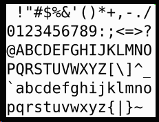

L'alphabet des ordinateurs est en caractères ASCII ou ANSI. En effet, la
plupart des ordinateurs utilisent un espace de 8 chiffres binaires pour
représenter un symbole, une lettre ou un chiffre, ce qui permet un ensemble de
256 caractères différents.
La norme ASCII est utilisée depuis belle lurette pour la communication entre
ordinateurs. L'acronyme signifie American Standard Code for
Information Interchange. IL s'agit d'un protocole pour coder des caractères (alphabet,
chiffres, ponctuation et autres) utilisés en informatique (1960, 1963, 1967,
1982). Il comporte 128 caractères dont 95 peuvent être imprimés.

De nos jours, Windows utilise un autre ensemble de caractères, soit le jeu de caractères ANSI qui signifie American National Standard Institute. L'institut travaille en étroite collaboration avec l'International Standard Organisation des Nations Unis (ISO), qui élabore beaucoup d'autres conventions. C'est donc un autre protocole pour représenter les caractères.
Les 127 premiers caractères des jeux ANSI et ASCII sont identiques. Windows utilise codes de 1 à 255 de la norme ANSI pour représenter les caractères. La norme ANSI permet un plus grand jeu de caractères et de symboles internationaux.